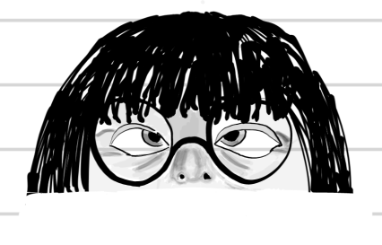

Resume
Summary

Harpz. 4th year Computer Science student at UNB Fredericton. Passionate software developer.
Education
Sept 2021 - Present:
Bachelor of Computer Science
University of New Brunswick, Fredericton, NB (Current GPA: 4.2)
Work Experience
Sept 2022 – Dec 2022: Mach85 Inc: Junior software developer
Frontend development with Qt/C++, QA/testing and bug-fixes. Worked on annotating training data for ML image recognition
Skills
- Web development with React/JS
- Proficient in HTML, CSS (Bootstrap)
- Proficient in native Android development with Kotlin
- Java Proficiency with Spring Boot (backend microservices)
- Experience with Docker for containerizing microservices and Kubernetes for orchestration
- Familiar with Machine Learning models and implementations. Hands-on experience with ML libraries in Python (scikit-learn, pytorch, pandas)
- Proficient in Unity/C# scripting (3D visualization, simulations and game development)
- C/C++ Proficiency. Experience with Qt front-end using C++/Python
- Database management with MySQL/MariaDB and JDBC, PostgreSQL
- Familiar with ARM assembly (Motorola 68HC11, MOS 6502)
Academic Awards
- 2021-22 UNB Scholarship for Academic Excellence
- 2022-23 Class of 1942 War Memorial Scholarship
- 2022-23 UNB Scholarship
- 2023-24 IGT Scholarship
- 2024-25 Edwin Jacob Special University Scholarship